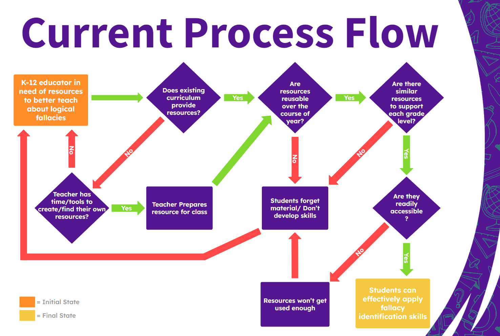

High school graduates are not prepared with the skills necessary to identify logical fallacies in an increasingly online world.
In this digital era, where the internet serves as a vast source of information, the need for sound critical thinking skills is more significant than ever. However, with the abundance of online content, we face a pressing societal challenge: the prevalence of logical fallacies, misinformation, and a lack of emphasis on critical reasoning skills.
Although American K-12 schools advocate for technology literacy, many do not educate students about logical fallacies beyond a brief lesson in high school language arts. A report titled “Teaching Critical Thinking in K-12” noted that among 4th-grade teachers, 86% emphasized teaching deductive reasoning, but this figure sharply declines to a mere 39% among 8th-grade teachers when expressing the same sentiment. Moreover, in a 2019 global survey conducted by Cambridge, 50% of teachers indicated they do not have enough time to effectively teach these skills, and only 21% of teachers agreed that they possess all the necessary resources to cultivate these skills.
Many existing curriculums do not include adequate resources for teaching logical fallacies. If educators wish to emphasize these concepts, they must spend time either creating their own materials or searching through the internet to find potential tools. Then arises another challenge: if the resources are not reusable over the course of the year, students will not develop adequate skills, and if there are not similar resources across grade levels, students will forget the material and fail to build on the skills they have acquired. Only if all of these elements come together will students be fully supported to build their skills in logical fallacy detection.
An optimal solution should account for these common pitfalls by having resources that are :
1. Reusable in a way that still builds on fallacy identification skills
2. Curated for multiple grade levels ranging from elementary to high school.
3. Quick for educators to set up and easy to guide students through.
Team Crystal is proposing a software solution: ReasonED.io
About ReasonED
ReasonED is a game-based learning website that improves the ability of users to identify logical fallacies through engaging, age-appropriate video games. ReasonED games will be curated for elementary, middle, and high school students respectively to support year-long learning and continuous learning over all grade levels. Thus, it will provide educators with a tool to cultivate their student’s critical reasoning skills over the long term and beyond the scope of a single subject.
These games will all share the same goal of introducing and improving logical fallacy identification skills, but the difficulties and approaches will vary depending on the age group. While the concepts and scenarios will be simplified for younger ages, the games aim to plant the seeds of critical thinking and encourage kids to recognize flawed reasoning. Many of the games will involve logical fallacies personified as fun characters. The fallacy characters will serve as memorable guides in student’s fallacy education journeys.
ReasonED resources can serve as a supplement to traditional classroom learning, offering an interactive and gamified approach to enhance critical reasoning skills, or as a standalone resource to introduce logical fallacies in places where such curriculum may be lacking. Because ReasonED is a website, once it is whitelisted on school networks, students can access it in their free time during school. As schools are pushing to incorporate more technology into lessons, ReasonED has the potential to gain a lot of exposure even outside of language arts classes.
Prototype
The ReasonED prototype will consist of a visually appealing website with pages dedicated to games, readings, and educator resources respectively. Three two-dimensional games will be developed and embedded on the website, each in which a logical fallacy is personified as a fun character with some flawed tendency that corresponds to the fallacy. The games will be:
Straw Manny: Straw Manny is a hopeful knight who needs better training. He only practices combat on fake straw men because they’re easier to hit. As a result, he isn’t a very skilled fighter. Players need to help Manny build his combat skills by attacking real opponents rather than fake ones, teaching the concept of the "straw man" fallacy.
Hasty Harry: Harry is an astronaut who makes flawed generalizations about the new creatures and plants he discovers on planets he visits. Players will collect enough information about each planet and help Harry avoid making generalizations in his planet report, teaching the "hasty generalization" fallacy. This will be a top-view game.
Slipery Slope Sadie: Sadie is a snowboarder who tends to jump to extreme conclusions. In this game, players need to guide Sadie safely down a snowy path without letting her slip into a pitfall, introducing the "slippery slope" fallacy. This will be a platformer game.
While the concepts and scenarios are simplified for younger ages, these games aim to plant the seeds of critical thinking and encourage kids to recognize flawed reasoning. The fallacy characters serve as memorable guides in this educational journey. This website will provide educators with a tool to cultivate their student’s critical thinking skills over the long-term and beyond the scope of a single subject.
The games will be curated for three general age groups; the first group being grades 2 and 3, the second being all middle schoolers, and third being all high schoolers. Curation will be achieved by adjusting the simplicity of the examples, reading levels, feedback, and by adjusting the penalties for wrong answers. Each game will follow a similar pattern of providing an age-appropriate explanation about the specific logical fallacy in focus, and feedback after each answer to help players understand why the character's thinking is incorrect, so that they can identify similar patterns in real-life scenarios.

Meet the Team

Emily Louk
Emily is a senior Computer Science undergraduate at ODU. She has an Associate degree in Information Systems and will pursue software engineering after earning her B.S.C.S.. Through ODU, she has interned with the Game Studies program as a programmer and participated in an Innovate-UOVN research project. She is interested in developing educational tools, video games, and mobile applications.
Alysha Morgan
Alysha is a undergraduate Senior at Old Dominion University, currently working towards her Bachelor’s degree in Computer Science with a minor in Cybersecurity. With a deep passion for technology, she is actively honing her skills to become a software engineer.

Dakota Dawe
Dakota is a Computer Science major at ODU. He is still finishing his Associates degree at LFCC while working through the remaining courses at ODU for his Bachelors. Dakota is currently working as a games programmer selling plugins on the Unreal Engine marketplace as well as a contract programmer for Small Indie Company developing their upcoming title “We The People”.

June Troyer
June is a senior Computer Science undergraduate at ODU in the linked Master’s program. She has an associate degree in Science from Piedmont Virginia Community College. She enjoys helping others explore new topics and improve their skills and reasoning.

Areeb Nabi
Areeb is a senior at Old Dominion University pursuing his undergraduate degree in Computer Science. He recently completed a 10-week summer internship with Automatic Data Processing (ADP), honing his skills as a Full-Stack Developer. Areeb specifically enjoys front-end development, and working with JavaScript libraries such as React, Express, and Node.js.

Daniel Cieslinski
Daniel is a senior at ODU and is pursuing a bachelor's degree in CS. He had previously obtained an associate's degree of Engineering at TNCC (now VPCC) and had also worked at NVIDIA for an internship. In his free time, he enjoys fighting games, MMOs, and tabletop games.
Presentations
Individual Societal Problem
Feasibility
Design
Deliverables
MFCD

Process Flow
Solution Flow

Risks
Labs
Lab 1
Lab 2 Version 1
Lab 2 Version 2
Glossary
Confirmation Bias - A cognitive bias that involves
seeking, interpreting, and remembering information that
confirms one’s preconceptions (American Psychological
Association n.d.).
Critical Thinking - The ability to think clearly and
rationally, understanding the logical connection between ideas
and the ability to make reasoned judgements (American
Psychological Association n.d.).
Fact-Checking - The process of verifying the accuracy
of claims made in public discourse and journalism (Cambridge
English Dictionary n.d.).
False Dilemma - A fallacy that presents a limited set
of options as the only possible choices when there may be
other alternatives (Excelsior OWL n.d.).
Logical Fallacy - An error in reasoning or a flawed
argument that can make an argument appear valid when it is not
(Nikolopoulou, 2023).
Misinformation - False or inaccurate information
shared, often unintentionally, without the intent to deceive
(Dictionary.com n.d.).
Disinformation - False information deliberately spread
to deceive or mislead others (Dictionary.com n.d.).
Slippery Slope - A fallacy that suggests one small step
will inevitably lead to a chain of related events, often with
exaggerated consequences (Excelsior OWL n.d.).
Straw Man Argument - A fallacy that involves
misrepresenting an opponent’s argument to make it easier to
attack and refute (Excelsior OWL n.d.).
References
American Psychological Association. (n.d.). Apa Dictionary of Psychology. https://dictionary.apa.org/critical-thinking
American Psychological Association. (n.d.). Apa Dictionary of Psychology. American Psychological Association. https://dictionary.apa.org/confirmation-bias
Bouygues, H. L. (2022, June). Teaching Critical Thinking in K-12: When There’s A Will But Not Always A Way. https://reboot-foundation.org/. https://reboot-foundation.org/wp-content/uploads/2022/07/Reboot-White-Paper_NAEP-5.pdf
Cambridge University. (2019). Thinking Teacher Survey. Cambridge University Press & Assessment. https://www.cambridge.org/us/cambridgeenglish/catalog/skills/unlock-2nd-edition/product-details/teaching-critical-thinking?utm_source=wobl&utm_medium=blog&utm_content=woblcontent&utm_campaign=unlock
Dictionary.com. (n.d.). Disinformation definition & meaning. Dictionary.com. https://www.dictionary.com/browse/disinformation
Dictionary.com. (n.d.). Misinformation definition & meaning. Dictionary.com. https://www.dictionary.com/browse/misinformation
Echales, M. Hope. (2017, December 14). Flaws in Your Twitter Feed: A New Frontier in LSAT Preparation. Blueprint Prep Blog. https://blog.blueprintprep.com/lsat/identifying-flaws-in-your-twitter-feed-a-new-frontier-in-lsat-preparation/
Fact-checking. FACT-CHECKING definition | Cambridge English Dictionary. (n.d.). https://dictionary.cambridge.org/us/dictionary/english/fact-checking
Fallacy (n.). Etymology. (n.d.). https://www.etymonline.com/word/fallacy
False dilemma fallacy. Excelsior OWL. (2022, May 19). https://owl.excelsior.edu/argument-and-critical-thinking/logical-fallacies/logical-fallacies-false-dilemma/#:~:text=Sometimes%20called%20the%20%E2%80%9Ceither%2Dor,actually%20many%20shades%20of%20gray.
Khartite, B., & Hellalet, N. (2021). The Impact of Teaching Reasoning Fallacies on the Critical Thinking Ability of Moroccan Engineering Students: The Case of ENSAM Meknes. International Journal of Linguistics, Literature and Translation, 4, 222-232. https://doi.org/10.32996/ijllt.2021.4.9.23
Nikolopoulou, K. (2023, October 9). Logical fallacies: Definition, types, list & examples. Scribbr. https://www.scribbr.com/fallacies/logical-fallacy/
Slippery slope fallacy. Excelsior OWL. (2022, May 23). https://owl.excelsior.edu/argument-and-critical-thinking/logical-fallacies/logical-fallacies-slippery-slope/
Straw Man Fallacy. Excelsior OWL. (2023, September 19). https://owl.excelsior.edu/argument-and-critical-thinking/logical-fallacies/logical-fallacies-straw-man/
Wardle, C., & Derakhshan, H. (2017, September 27). INFORMATION DISORDER: Toward an interdisciplinary framework for research and policy making. https://tverezo.info/wp-content/uploads/2017/11/PREMS-162317-GBR-2018-Report-desinformation-A4-BAT.pdf